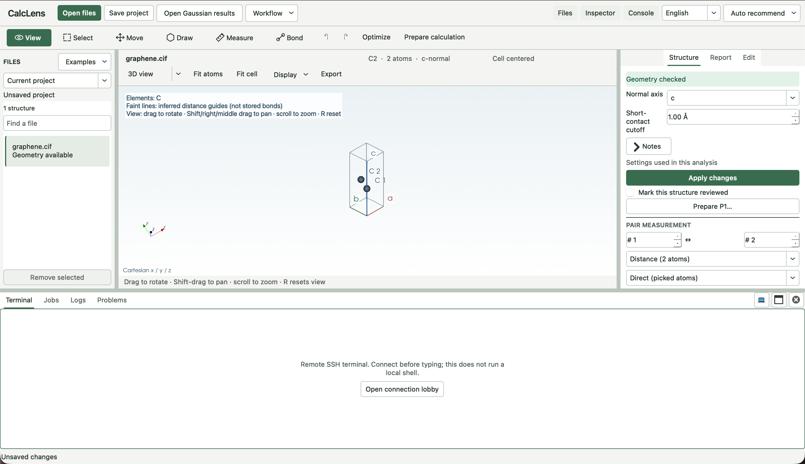

Edit the structure
Open CIFs and molecules. Select, move or add atoms; inspect distances, angles and neighboring cells, and undo your edits.
Editing and structure reviewCrystals · Molecules · Calculation results
Edit crystal and molecular structures and prepare calculation inputs. When the calculation is done, inspect the results and their source data in the same workspace.

The workflow
Prepare inputs from the structure you are editing. After the calculation, check which geometry and conditions produced each result.
Open CIFs and molecules. Select, move or add atoms; inspect distances, angles and neighboring cells, and undo your edits.
Editing and structure reviewReview methods with Auto recommend and preflight checks. Prepare inputs, job folders and run examples for Gaussian and other calculation programs.
Inputs and server jobsReview optimized geometries, energies, vibration modes and electronic surfaces. Follow result rows to the source and save the structure with its conditions.
Results and source dataExamples and scope
01 / Crystal structure
In the expanded graphite cell from COD 9011577, the shortest periodic distance is 1.42258 Å and the gap between nuclear planes is 3.3555 Å. Inspect neighboring-cell images and shifts alongside the measurement.
Original diffraction study02 / Calculation output
In the public cclib divinylbenzene output, optimizer step 3 points to the energy on source line 1857. Prepare a follow-up input from that geometry.
Public example outputChoose your operating system
Free to use. Release versions and default calculation engines differ between operating systems.
Apple Silicon · macOS 15 or later
Open the DMG and copy the app to Applications. On first launch, choose Install to download its runtime.
Windows 10 / 11 · x64
Choose the per-user installer or portable ZIP. First setup requires internet access.
Editing, interchange and Gaussian workflows use the 0.17.1 baseline. Local PySCF and GFN2-xTB are not included in the default Windows environment.
Gaussian requires a separate license and execution environment. Saving an input or job folder does not start a calculation. Live laboratory Gaussian and SSH calculations need separate validation.
The Mac app is ad-hoc signed and has not been notarized by Apple. The Windows launcher is unsigned. If your operating system shows a warning, verify the download source and SHA-256 digest.
Latest update
This update revises console sizing, connection states, file locations and access to Gaussian results. The Windows release remains at 0.17.1.